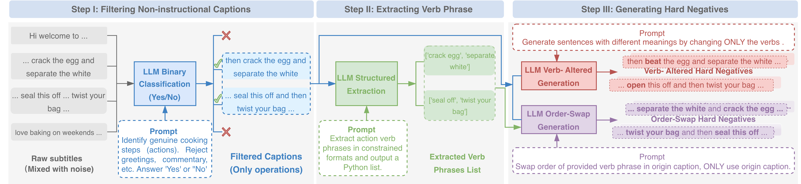
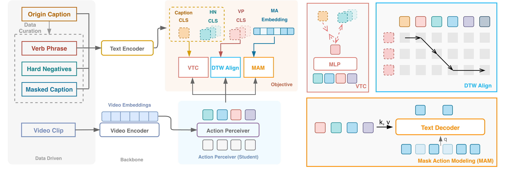
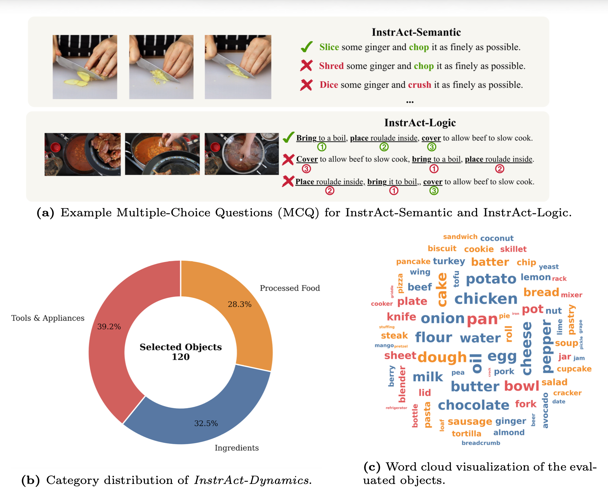
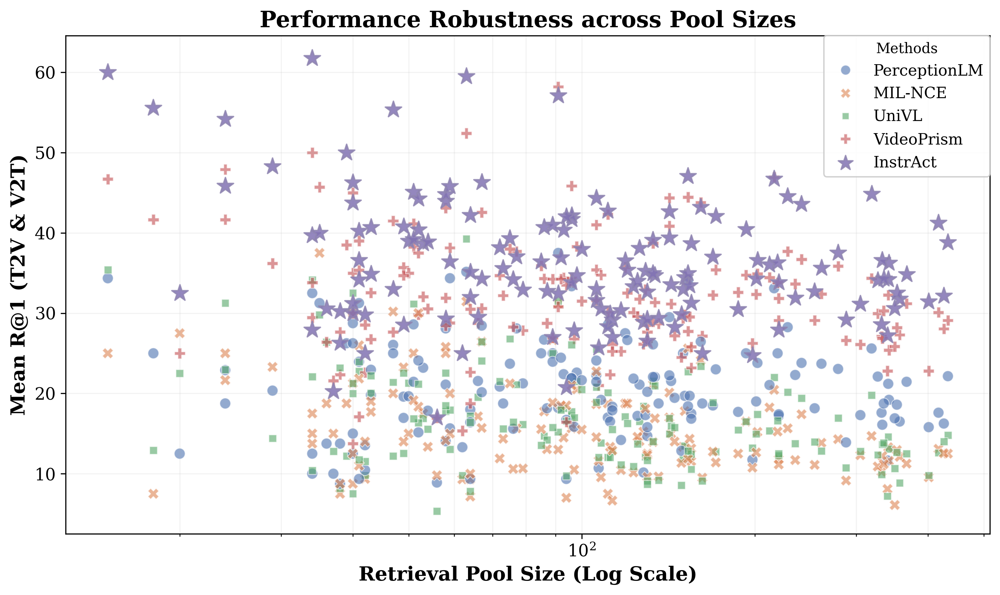
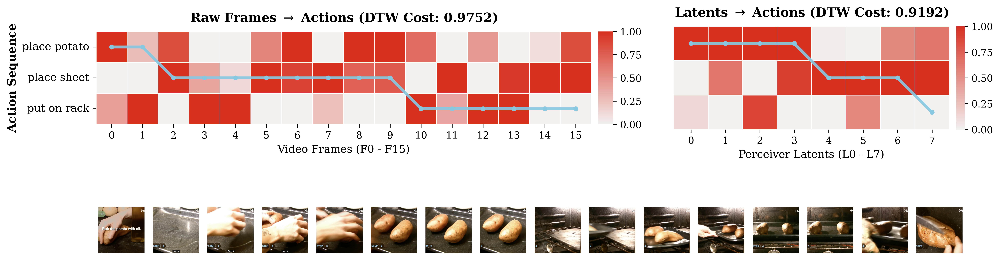

InstrAct-Semantic
10-choice multiple-choice evaluation with action-altered hard negatives that preserve objects and context.
- Focus: fine-grained verb discrimination
- Metrics: R@1, R@5, Mean Rank
ECCV 2026
A pretraining framework that learns motion-aware, temporally grounded video-language representations for multi-step instructional videos.
Understanding instructional videos requires recognizing fine-grained actions and modeling their temporal relations. Current video foundation models often rely on static objects and backgrounds rather than motion cues, especially when trained from noisy web supervision. InstrAction addresses this by combining LLM-assisted data curation, action-centric hard negatives, an Action Perceiver for motion-relevant token extraction, and auxiliary objectives for temporal alignment and cross-modal grounding.
The framework introduces DTW-Align to model non-linear temporal correspondence between visual action tokens and verb phrases, and Masked Action Modeling to recover masked action tokens using both visual evidence and language context. The accompanying InstrAct Bench evaluates semantic reasoning, procedural logic, and fine-grained retrieval for action-centric instructional video understanding.
Filters non-instructional captions, extracts structured verb phrases, and generates action-centric hard negatives from instructional video transcripts.
Compresses redundant visual features into compact action tokens guided by verb-conditioned distillation.
Combines video-text contrastive learning with DTW-Align and Masked Action Modeling for procedural reasoning.
Diagnoses action semantics, procedural logic, and fine-grained dynamics where object shortcuts are controlled.
InstrAction starts with a data-driven pipeline that transforms noisy instructional subtitles into action-centric supervision. It keeps concrete instructional captions, extracts verb phrases such as crack egg or separate white, and creates two types of hard negatives: verb-altered negatives and order-swapped negatives.

Figure 2. LLM-assisted data curation pipeline: filtering, verb phrase extraction, and hard-negative generation.
On the model side, the Action Perceiver distills motion-essential tokens from video features. These action tokens support three complementary training signals: video-text contrastive learning, DTW-based action-verb alignment, and masked action reconstruction.

Figure 3. InstrAction framework with Action Perceiver, DTW-Align, and Masked Action Modeling.
Three complementary tasks for measuring whether video-language models truly capture actions and procedures instead of static object cues.
10-choice multiple-choice evaluation with action-altered hard negatives that preserve objects and context.
Multiple-choice evaluation with order-altered negatives that preserve the same action vocabulary.
Fine-grained cross-modal retrieval over object-centric pools where candidates share the same primary object.

Figure 4. Benchmark examples, category distribution, and word cloud visualization.
InstrAction improves action-centric understanding across semantic, logic, and dynamics benchmarks. The strongest gains appear when models must distinguish subtle action changes while objects remain similar or identical.
| Benchmark | Best Baseline | InstrAction | Gain |
|---|---|---|---|
| InstrAct-Semantic R@1 | 18.4 | 28.1 | +9.7 |
| InstrAct-Logic ACC | 33.6 | 40.0 | +6.4 |
| InstrAct-Dynamics Mean R@1 | 30.68 | 34.53 | +3.85 |
| InstrAct-Dynamics Mean R@5 | 53.79 | 57.13 | +3.34 |



Figure 5. Retrieval visualization, DTW heatmaps, or qualitative comparisons.
@inproceedings{yang2026instraction,
title = {InstrAction: Towards Action-Centric Understanding in Instructional Videos},
author = {Yang, Zhuoyi and Yu, Jiapeng and Tan, Reuben and Li, Boyang and Xu, Huijuan},
booktitle = {European Conference on Computer Vision (ECCV)},
year = {2026}
}